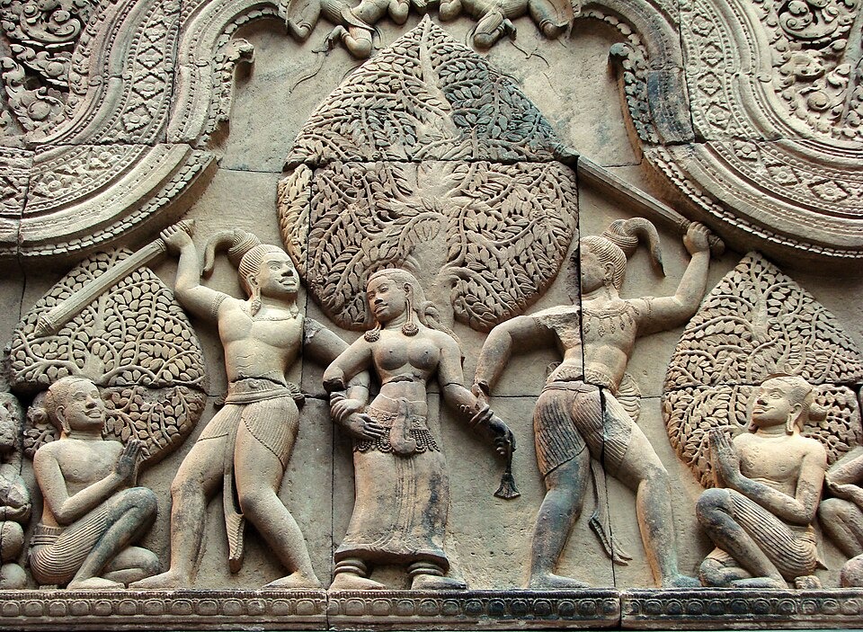

អក្សរសិល្ប៍ខ្មែរ
អក្សរសិល្ប៍ខ្មែរ មានប្រវត្តិសាស្ត្រដ៏យូរលង់ និងសម្បូរបែប ដែលឆ្លុះបញ្ចាំងពីព្រលឹង វប្បធម៌ ជំនឿ និងការវិវត្តនៃសង្គមខ្មែរតាំងពីបុរាណកាលរហូតមកដល់បច្ចុប្បន្ន។
តើអ្វីទៅជា អក្សរសាស្រ្តខ្មែរ?
អក្សរសិល្ប៍ខ្មែរ សំដៅលើរាល់ស្នាដៃតែងនិពន្ធ ទាំងសំណេរ (អក្សរសិល្ប៍លាយលក្ខណ៍អក្សរ) និងការនិយាយស្តីតៗគ្នា (អក្សរសិល្ប៍ប្រជាប្រិយ ឬអក្សរសិល្ប៍ផ្ទាល់មាត់) ដែលឆ្លុះបញ្ចាំងពីទស្សនៈ ជំនឿ វប្បធម៌ អរិយធម៌ និងតថភាពសង្គមខ្មែរតាមសម័យកាលនីមួយៗ។ ពាក្យថា «អក្សរសិល្ប៍» កើតចេញពីពាក្យ អក្សរ (តួអក្សរ/សំណេរ) រួមផ្សំនឹងពាក្យ សិល្ប៍ (សិល្បៈ/ភាពផ្ចិតផ្ចង់ ពិរោះរណ្តំ)។ ដូចនេះ អក្សរសិល្ប៍ខ្មែរមិនមែនគ្រាន់តែជាការសរសេរធម្មតានោះទេ ប៉ុន្តែជាសិល្បៈនៃការប្រើប្រាស់ភាសា ដើម្បីបង្កើតជាផ្ទាំងទស្សនីយភាពផ្លូវចិត្ត បំភ្លឺសង្គម និងអប់រំមនុស្ស។

ប្រភេទអក្សរសិល្ប៍ខ្មែរ
ការបែងចែកតាមប្រភព និងខ្លឹមសារ ៤ ប្រភេទ
អក្សរសិល្ប៍ប្រជាប្រិយ
កើតចេញពីមហាជន — ឆ្លងកាត់ការនិយាយតៗគ្នាពីមាត់មួយទៅមាត់មួយ ដោយមិនត្រូវបានកត់ត្រាជាលាយលក្ខណ៍អក្សរក្នុងដំណើរដំបូង។
ទម្រង់
ឧទាហរណ៍
- រឿងអាខ្វាក់អាខ្វិន
- រឿងធនញ្ជ័យ
- រឿងតាត្រសក់ផ្អែម
- រឿងដើមកំណើតភ្នំប្រុសភ្នំស្រី
អក្សរសិល្ប៍ពុទ្ធសាសនា
ផ្អែកលើទស្សនវិជ្ជា ច្បាប់ក្បួន និងរឿងរ៉ាវព្រះពុទ្ធសាសនា ក្នុងគោលបំណងអប់រំចិត្តគំនិតមនុស្ស ឱ្យធ្វើបុណ្យ លះបង់បាប។
ទម្រង់
ឧទាហរណ៍
- រឿងព្រះវេសន្តរ
- រឿងពុទ្ធិសែននាងកង្រី (បញ្ញាសជាតក)
- រឿងមារបង់បាប
អក្សរសិល្ប៍ព្រាហ្មណ៍សាសនា
ទទួលឥទ្ធិពលពីវប្បធម៌ហិណ្ឌូឥណ្ឌា — ត្រូវបានអ្នកប្រាជ្ញខ្មែរកែច្នៃ ឱ្យស្របទៅនឹងតថភាពសង្គមខ្មែរ។
ទម្រង់
ឧទាហរណ៍
- រឿងរាមកេរ្តិ៍ (ពីរឿងរាមាយណៈ)
- រឿងមហាភារតៈ
អក្សរសិល្ប៍ខេមរនិយម
ឆ្លុះបញ្ចាំងពីតថភាពរស់នៅពិតៗ ទំនៀមទម្លាប់ ជីវិតស្នេហ៍ — ដោយមិនពឹងផ្អែកលើទេវកថា ឬរឿងបរទេសឡើយ។
ទម្រង់
ឧទាហរណ៍
- រឿងទុំទាវ (សម័យកណ្តាល)
- រឿងផ្កាស្រពោន
- រឿងកុលាបប៉ៃលិន
- រឿងគ្រូបង្រៀនស្រុកស្រែ